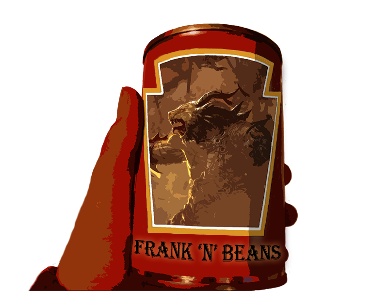

<div id='content'>
<div id='about_container'>

	<div id='header'>
		
		<span>Frank N Beans</span>
	</div>


	<h1>About</h1>

		<h2>Goals</h2>

		<p>
			Frank N Beans is a Guild Wars 2 guild which aspires to create an active
			community of players. We do not intend to create a hardcore guild which
			requires extreme attendance, our only real requirement is that you enjoy
			playing the game and experiencing the various things that it has to offer.
		</p>

		<p>
			We try to shy away from the usual PvE/PvP guild mentality, instead focusing on
			whatever we find fun at the moment. We do not require members to commit to this
			idea of experiencing everything: fe. an active player who mainly enjoys structured
			PvP is welcome in our guild. So if you feel like you'd enjoy our company, send us
			in-game and introduce yourself!
		</p>

		<h2>History</h2>

		<p>
			The guild leadership has been playing together for quite a while now, 
			dating all the way back to the beta of World of Warcraft. While we do
			not possess experience from Guild Wars 1, we do have a record of other MMO's
			under our belt.
		</p>


	<h1>FAQ</h1>

		<p class='q'>What is the guild tag?</p>

			<p class='a'>[FNB]</p> 

		<p class='q'>What does Frank N Beans mean?</p>

			<p class='a'>It is a type of canned food found in DayZ.</p>

		<p class='q'>Who are the officers/leaders?</p>

			<p class='a'>
				Primarily Beans Mcready and Deneos, however in some rare cases you might 
				want to contact Frank Stills.
			</p>

		<p class='q'>All right. How do I join?</p>

			<p class='a'>
				Send in-game mail to either Beans Mcready or Deneos and introduce yourself.
				This is mainly a formality, but it also serves us to know what kind of a person we
				should expect.
			</p>


	<div class='return'><a href='#site/forum'>Go back</a></div>
			
</div>
</div>